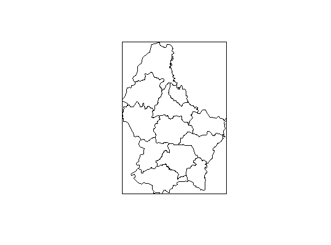

spex(x, ...) # S3 method for default spex(x, byid = FALSE, .id, ...) # S3 method for Extent spex(x, crs, ...)
Extentspex
Create Spatial Polygons with projection metadata from a 'Spatial Extent'.
This function is to replace a common pattern in the 'sp'-'raster' family which is
Extent, a bounding box in xmin,xmax,ymin,ymax but without projection metadata
SpatialPolygons
SpatialPolygonsDataFrame.
In short, this pattern exists because there is no projection metadata stored
with either sp''s bbox or 'raster''s Extent.
spex |
| function to produce a fully fledged Spatial object extent |
Please note that an extent converted to polygons consists of only four unique coordinates, and so this is not necessarily suited for projection transformations.
Consider also that this is a common limitation, outside of R, where the "OGC standard" for serialized geometry in "well known text" (WKT) or "well known binary" (WKB) do not include projection metadata. Some GIS systems do provide serialized geometries that include this crucial metadata, and may we encourage this to become more common. Not only is "longitude / latitude" coordinates not always suitable, they are actually meaningless without knowing the _datum_ (the ellipsoid radii and orientation, often WGS84) and the units in use (usually 'degrees', but sometimes 'radians')
Loading required package: sp
class : SpatialPolygonsDataFrame features : 1 extent : 0, 1, 0, 1 (xmin, xmax, ymin, ymax) coord. ref. : +proj=laea +ellps=WGS84 variables : 1 names : p min values : 1 max values : 1## Not run: ------------------------------------ # ## library(rgdal) # ## p4 <- "+proj=laea +ellps=WGS84" # ## plot(spTransform(lux, p4)) # ## warning, this is just 4 coordinates # ## plot(spTransform(exlux, p4), add = TRUE) ## ---------------------------------------------